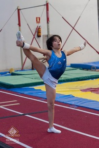
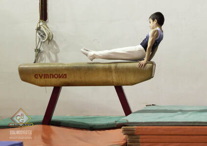
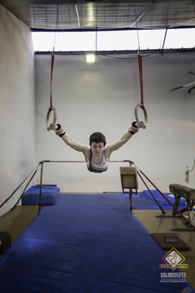
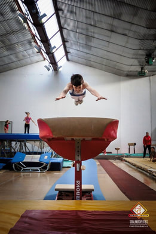
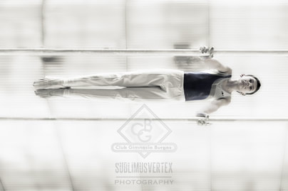
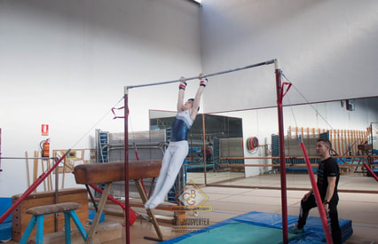

APARATOS DE LA GIMNACIA ARTISTICA
| SUELO | El suelo mide 12 x 12 metros, con un borde de seguridad adicional de 1 metro. El área de actuación debe tener una elasticidad suficiente para permitir la potencia durante los despegues y la suavidad para los aterrizajes. El material de la cubierta no debe causar quemaduras en la piel. |  |
| CABALLO CON ARCOS | tiene una altura de 1,15 metros, 1,10 desde el borde de la colchoneta, e incluso a 1 metro, en categorías inferiores y tiene dos asas unidas al cuerpo del aparato, ajustables de 40 a 45 cm de distancia, que se pueden quitar en categorías inferiores. |  |
| ANILLAS | Cuelgan de una estructura llamada pórtico a 2,75 metros por encima del suelo. El ejercicio de anillas combina ejercicios de suspensión y vuelo con ejercicios de fuerza estática. Ejemplos de estos elementos de fuerza son el Cristo, planchas (es una posición rígida del cuerpo, paralela al suelo y por encima de las anillas)…Las anillas deben permanecer bajo absoluto control al final de cada elemento. El programa debe terminar con unos ejercicios acrobáticos. |
 |
| SALTO | Para el salto se utiliza una plataforma de saltos en forma de lengua a 135 cm del suelo, más bajo en categorias inferiores y para el impulso se requiere de un trampolín o Reuther. Cada salto está clasificado en el código de puntuación, que otorga la nota según el elemento acrobático que se lleva a cabo durante el ejercicio, es decir, a cada tipo de salto. |  |
| PARALELAS | Las paralelas se encuentran a 1,95 metros de altura variables por categorias y 3,50 metros de longitud. La anchura de las bandas se puede variar según las necesisdades del gimnasta. Un ejercicio de paralelas consiste básicamente en elementos de balanceo y vuelo. Componentes de fuerza pueden ser empleados en la rutina, aunque no son necesarios. El gimnasta debe recorrer la longitud completa del aparato y el trabajo en la parte superior de las barras, así como por debajo de ellos. |
 |
| BARRA FIJA | Tiene 2,40 m. de ancho y 2,75 metros de altura. El ejercicio de barra fija consiste exclusivamente de elementos de balanceo sin paradas y limpios y no debe tocar la barra con su cuerpo. Tiene la obligación de demostrar los cambios de agarre, movimientos de balanceo hacia adelante y hacia atrás. Se le exige al gimnasta que ejecute ejercicios cerca de la barra, con trabajo de hombros dislocados, con “sueltas” de manos y elementos acrobáticos de salida. |
 |